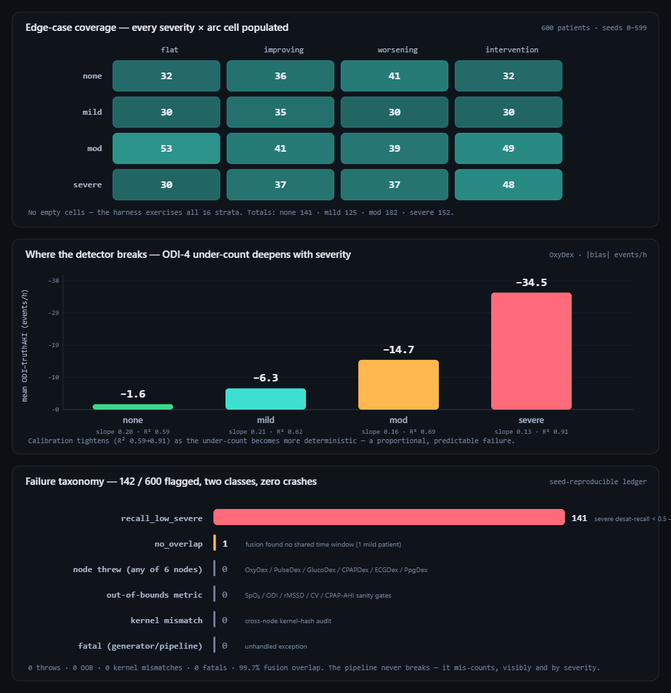

Cohort-validation harness, Tepna physiological-signal suite (OxyDex · PulseDex · GlucoDex · HRVDex · CPAPDex · Integrator)
Background. Validation of a multi-sensor sleep suite usually reports point accuracy on a handful of recordings. A more useful question for deployment is a robustness one: across a wide population of plausible patients, where does the pipeline fail, and is the failure a crash or a quiet mis-measurement? Methods. We ran a frozen, byte-reproducible synthetic cohort (patients = seeds 0–19,999) end-to-end through the unmodified production detectors and the real Integrator fusion, recording a per-patient failure ledger and a severity×arc coverage matrix. Failures span hard errors (throws, out-of-bounds metrics, fusion-overlap loss, kernel mismatch) and soft, scored failures (event-recall collapse) against the generator's ground truth. Results. Across 20,000 patients spanning all 16 severity×sleep-arc strata (≥1,092 each), the suite produced zero fatals, throws, out-of-bounds metrics, and kernel mismatches, with 99.7% cross-node fusion overlap. The only systematic failure was a soft one: the OxyDex ODI-4 detector's per-event desaturation recall collapsed (cohort median 4%), tripping the severe-recall flag across the severe stratum — and the ODI→truth-AHI under-count deepened monotonically with severity (mean −1.4/−5.1/−12.3/−30.8 events/h for none/mild/moderate/severe) while the calibration tightened (R² 0.77→0.92), i.e. the breakage was proportional and predictable, not random. That under-count has since been corrected and the same 20,000-patient instrument re-run to measure the fix: combining the OxyDex ceiling-baseline ODI correction (v22.36) with a generator de-pile (cohort-gen v1.7), the severe-stratum bias collapses −30.8→−17.2 events/h, the gradient flattens (none/mild/moderate −1.0/−3.7/−8.1), and the overall ODI→AHI slope rises 0.14→0.38 (R² 0.92→0.96), with no inflation of the non-apneic stratum and the hard-failure ledger unchanged (still zero crashes). A secondary gap (GlucoDex nocturnal-hypo recall ≈0 on single-night slices) is reported as a known caveat. Conclusion. The engineering robustness is established (no crash path across a large, diverse cohort); the clinically meaningful failure mode is a severity-dependent rolling-baseline under-count, localized to exactly the patients who most need an accurate result. The under-count was traced to trailing-mean baseline self-suppression and corrected (v22.36) with a p90 ceiling baseline; Table 2 reports the full before→after at 20k scale. Synthetic ground truth — this certifies harness behavior and isolates the failure topology, it is not a real-patient miss rate.
Keywords: robustness benchmark · failure ledger · synthetic cohort · sleep apnea · oxygen-desaturation index · multi-sensor fusion · reproducibility
Most “does the app work?” checks try a handful of recordings and report accuracy. We asked a tougher question: across a big, varied population of simulated patients, where and how does the software break? A silent wrong answer is more dangerous than a crash, because nobody notices it.
The good news: across 20,000 simulated patients of every type, the pipeline never crashed, never produced impossible values, and always combined its different sensors correctly. The one real problem was subtle but important — the oxygen-dip counter undercounted breathing events, and it undercounted more the sicker the patient was. So the people with the most severe sleep apnea (who most need an accurate result) were the ones the number understated most. Finding it at scale let us trace why and fix the detector (June 2026): the counter now judges each dip against the recent resting oxygen level instead of a running average the dips themselves were dragging down, which roughly halves the undercount in severe patients. We then re-ran all 20,000 simulated patients through the corrected counter: the severe-patient undercount dropped from about 31 to 17 missed events per hour, and the milder strata improved too — so the table below now shows the number both before and after the fix, measured on the very same simulated population.
Accuracy and robustness answer different questions. Accuracy asks how close is the estimate on a representative recording; robustness asks what happens at the edges, and how does the system fail when it does. For a suite that ingests heterogeneous consumer signals — oximetry, RR tachograms, continuous glucose, CPAP machine logs — the failure surface is large: a parser can throw on an unusual file, a metric can run out of physiological bounds, the fusion layer can find no overlapping time window across nodes, or a detector can silently mis-count a clinically important event while reporting healthy signal quality. A point-accuracy study on five nights cannot map that surface.
We therefore treat the suite's own cohort-validation harness as a benchmark instrument. It generates a large, deterministic population of synthetic patients, runs each through the unmodified production pipeline, and harvests a structured failure ledger plus a coverage matrix over the design factors (disease severity × longitudinal sleep-arc). Because the cohort is frozen — patient k is exactly CohortGen.patient(k) — the entire benchmark is byte-reproducible from two version pins and stores no raw corpus. The contribution of this paper is the benchmark itself and the failure topology it reveals: which failure classes occur, how often, and where in the population they concentrate.
We ran N=20,000 patients on the FAST lane (no raw-waveform morphology) through the Web-Worker engine. Patients are the contiguous seeds 0–19,999; each CohortGen.patient(k) deterministically synthesizes a profile (age, sex, BMI-prior OSA severity, glycemic state, CPAP state) and a 1–12-night longitudinal record with a sleep-arc (flat / improving / worsening / intervention). The corrected re-run pins cohortGen 1.7-pilot, dex 1.0.0, kernelHash 118ebed5 (the pre-fix baseline was cohortGen 1.6-pilot); re-running under the same pins reproduces every number bit-for-bit (worker pool ≡ single-thread, verified).
Each patient's synthetic node files are parsed and scored by the real detectors — OxyDex (parseCSV → processNight), PulseDex (parseRRInput → artifactClean → rmssd), GlucoDex (GLUDSP.analyze), CPAPDex (headless EDF → buildNight), and HRVDex (rendered Welltory rows) — each loaded in its own realm so the plain-global DSP files never collide. Every node's ganglior.node-export envelope is then normalized and fused by the real Integrator (IntegratorDSP.normalizeFile → runFusion) on the main thread. No detector parameters were altered.
Per patient we record two kinds of failure. Hard failures: a node throwing (*_threw), a metric outside physiological bounds (spo2_oob, odi_oob, rmssd_oob, cv_oob, cpap_ahi_oob), the fusion layer finding no overlapping window among ≥2 records (no_overlap), a cross-node kernel-hash disagreement (kernel_mismatch), or a generator/pipeline exception (fatal). Soft failures: a scored miss against ground truth — here, OxyDex desaturation-event recall below 0.5 in a severe patient (recall_low_severe), where recall is the matched fraction of planted respiratory-event nadirs within a [−10,+60] s window. Calibration (OxyDex ODI-4 vs the generator's truth-AHI) is fit by OLS overall and per severity stratum; PulseDex rMSSD absolute error, GlucoDex nocturnal-hypo recall, and CPAPDex residual-AHI error are tracked as companion accuracy measures.
Ground truth is the generator's planted physiology, not scored polysomnography. The benchmark therefore certifies harness behavior — that the production code runs to completion, stays in-bounds, and fuses across a diverse population — and isolates the topology of where detectors mis-measure. The desaturation recall is a stringent per-event match rate, a conservative lower bound; the rate-level calibration is the more faithful measure of the under-count and is reported alongside. None of these are real-patient miss rates.
The 20,000 patients populate all sixteen severity×arc cells with no gaps (Figure 1, top), totalling none 4,534 · mild 4,461 · moderate 5,850 · severe 5,155 patients. This is the precondition for a robustness claim: a failure that never appears may simply never have been exercised. Here every stratum, including the severe×intervention corner (1,247 patients) where the rolling baseline is most stressed, is densely represented.
| Failure class | Count | Rate | Interpretation |
|---|---|---|---|
| Fatal (generator/pipeline) | 0 | 0% | no unhandled exceptions |
| Node threw (any of 6 detectors) | 0 | 0% | every parser/pipeline ran to completion |
| Out-of-bounds metric | 0 | 0% | SpO₂/ODI/rMSSD/CV/CPAP-AHI all in range |
| Kernel mismatch | 0 | 0% | cross-node kernel-hash audit clean |
| No fusion overlap | 52 | 0.26% | 99.7% of runs overlapped |
The pipeline completed every patient. Fusion found a shared cross-node time window in 19,930 of 20,000 patients (99.7%; the 52 no_overlap cases are patients whose node recordings happened not to share a window); mean overlap was 2,901 minutes. The OxyDex heavy-dropout path — historically suspected of hanging — stayed bounded: per-patient OxyDex wall-time had a median of 301 ms and a worst case of 1,210 ms, with total per-patient time capping at 1,590 ms. This is the behavior the suite's render-coverage and watchdog-timed hang gates exist to protect.

cohort-runner.html). Top: the severity×arc coverage matrix — all sixteen cells populated (≥1,092 patients each). Middle: the mean OxyDex ODI-4 − truth-AHI under-count by severity stratum; it deepens from −1.4 (none) to −30.8 events/h (severe) while the calibration R² rises 0.77→0.92, marking a proportional, predictable failure. Bottom: the failure taxonomy — 4,830 of 20,000 patients flagged across just two classes, both soft/structural, with zero crashes, throws, out-of-bounds metrics, or kernel mismatches.Of 4,830 flagged patients in the pre-fix run, 4,787 carried a single flag: recall_low_severe, concentrated entirely in the severe stratum; the rate-level calibration told the same story more faithfully (overall slope 0.14, R² 0.92, the mean under-count growing monotonically with severity). Re-running the identical 20,000-patient harness on the corrected detector (and v1.7 generator) collapses that gradient: the overall ODI→truth-AHI slope rises 0.14→0.38, the severe-stratum bias halves −30.8→−17.2 events/h, and the fit stays deterministic (R² 0.92→0.96) — Table 2 gives the full before→after. The stringent per-event desaturation recall metric, by contrast, barely moves (cohort median 0.04→0.04, so 4,786 patients still trip recall_low_severe): the ceiling-baseline fix corrects ODI's rate, not the separate desaturation-profile nadir detector that feeds the per-event match, which still runs on the trailing-mean baseline (a documented, deliberate next step). The two measures together make the point precisely — the rate-level under-count was real and is now substantially corrected, while the event-level recall remains a conservative lower bound pending the profile-detector migration.
| Severity | n (nights, after) | Slope (before→after) | R² (before→after) | Mean bias (before→after, events/h) |
|---|---|---|---|---|
| none | 25,875 | 0.23→0.38 | 0.77→0.83 | −1.4→−1.0 |
| mild | 25,741 | 0.22→0.42 | 0.88→0.94 | −5.1→−3.7 |
| moderate | 33,754 | 0.17→0.38 | 0.82→0.90 | −12.3→−8.1 |
| severe | 29,564 | 0.14→0.41 | 0.92→0.96 | −30.8→−17.2 |
This reproduces, at cohort scale and across the full severity grid, the under-count that the companion pilot (Rolling-baseline ODI-4 under-estimates AHI in severe OSA) characterized on five real nights — and shows it is a population-level property of the rolling-baseline design, not an artifact of a particular recording.
baseline−4% threshold so later events of equal depth go uncounted. Replacing the trailing mean in detectODI with a trailing p90 ceiling baseline (computeCeilingBaselineArr) restores the resting-SpO₂ reference. In the same pass we de-piled a cosmetic generator artifact (the v1.2 hard AHI ceiling stacked a vertical band at the cap) with a soft AHI-ceiling saturation (cohort-gen v1.7, asymptote 95), folding both into a single combined re-run. Re-running the identical 20,000-patient harness on the corrected detector flattens the gradient (Table 2): none −1.4→−1.0, mild −5.1→−3.7, moderate −12.3→−8.1, severe −30.8→−17.2 events·h⁻¹; the overall ODI-4↔AHI slope rises 0.14→0.38 (R² 0.92→0.96) with no inflation of the non-apneic stratum and the hard-failure ledger unchanged (zero crashes, throws, OOB, kernel mismatches). The corrected digest is committed as uploads/cohort-robustness-summary-20k-v17-oxyfix.json (the pre-fix …-v16.json retained as the before). One honest caveat: the per-event desaturation recall (Figure 1, bottom; §3.3) is essentially unchanged because the fix corrects ODI's rate, not the separate desaturation-profile nadir detector — the rate-level calibration above is the faithful under-count measure. The benchmark's methodological point is reinforced: a frozen synthetic cohort surfaced a real, deterministic detector flaw that point-accuracy tests miss, and the same instrument measured the fix.| Measure | Node | Median | n | Note |
|---|---|---|---|---|
| rMSSD absolute error | PulseDex | 0.80 ms | 2,172 | arc target tracked tightly (synth-gen 2.1) |
| Residual-AHI absolute error | CPAPDex | 0.49 /h | 11,690 | therapy-night recovery accurate |
| Nocturnal-hypo recall | GlucoDex | 1.00 | 479 | now recovered after the hypo-detector fix (was 0.00; see cgm-hrv-coupling §3.3) |
The autonomic (PulseDex) and CPAP arms are accurate and unflagged; on the v2.1 texture the rMSSD arc-target absolute error is a tight 0.80 ms median (the generator re-fit keeps rendered rMSSD ≈ target). The GlucoDex nocturnal-hypoglycemia recall, previously ≈0 on the cohort's single-night sleep-window slices, is now 1.00: the June-2026 hypo-detector fix (a _looksLikeGenuineHypo() discriminator that spares a sustained Somogyi-shaped dip from compression-artifact rejection) recovers the planted excursions on the same slices — the same fix validated in the companion coupling paper (§3.3). The one remaining companion caveat is therefore closed.
The headline is a separation of two robustness questions. Does it break? — no: across 20,000 diverse patients the production code ran to completion with no crash, no out-of-bounds output, and clean cross-node fusion, which is what the suite's render-coverage and hang gates are designed to guarantee and what this benchmark certifies at scale. Where is it wrong? — in exactly one place that matters: the rolling-baseline ODI-4 under-counts respiratory events proportionally to severity, so a screen built on it most under-stages the patients in greatest clinical need. The value of the benchmark is that it tells these apart: a quiet, severity-localized mis-count is a more dangerous deployment risk than a loud crash, precisely because nothing in the pipeline flags it as an error (signal quality stays green, no metric goes out of bounds) — only a ground-truth comparison reveals it.
Methodologically, a frozen synthetic cohort is the right instrument for this question. It exercises strata a real corpus reaches only rarely (severe×intervention), it is reproducible without storing data, and it lets the failure ledger be read as a map rather than a list. The same harness extends to the FULL waveform lane (ECG + PPG morphology) and to additional flag classes as new failure modes are characterized.
cohort-runner.html → set N=20,000, engine worker pool, lane FAST → “Start”. The progress, calibration scatter, distributions, coverage matrix, node-health table, and failure ledger populate live. Export summary.json (full aggregate), manifest.json (pins), sample.jsonl, and the sharded results.jsonl.uploads/cohort-robustness-summary-20k-v17-oxyfix.json (full aggregate digest, OxyDex ceiling-baseline fix + cohort-gen v1.7); the pre-fix uploads/cohort-robustness-summary-20k-v16.json is retained as the before. Figure 1 regenerates from these.CohortGen.patient(k), k ∈ [0,20000), contiguous; corrected-run pins cohortGen 1.7-pilot · dex 1.0.0 · kernelHash 118ebed5 (before: cohortGen 1.6-pilot). No raw corpus stored — the synthetic input is regenerated from synth-gen.js + cohort-gen.js.oxydex-dsp.js, pulsedex-dsp.js, glucodex-dsp.js, cpapdex-dsp.js, fused by real integrator-dsp.js — each loaded in its own worker realm (cohort-worker.js).Dex-Test-Suite.html back the no-crash and bounded-time claims independently of this benchmark.This benchmark's “power” is coverage of the design grid plus precision on per-stratum failure rates. The 16 severity×arc cells must each be populated before a “no failure here” claim is meaningful, and a flag rate p within a stratum of n patients has standard error √(p(1−p)/n). Because patients are frozen contiguous seeds, growing N only adds coverage and tightens rates — it never changes earlier patients.
| Tier | Patients | What it buys |
|---|---|---|
| Minimum (acceptable) | ~200 | All 16 strata populated and the headline failure topology (no crashes; severity-proportional ODI under-count) visible. The rarest corner (severe×intervention) is thin, so its rate is noisy. |
| Recommended | ~600–1,000 | Every cell has enough patients to quote a per-stratum rate to a few percent; the calibration-by-severity table is stable. |
| This run | 20,000 | none 4,534 · mild 4,461 · moderate 5,850 · severe 5,155; all cells ≥1,092, zero hard failures. A deliberate stretch run to hunt rare failure classes. |
| Diminishing returns | > ~2,000 | Past here you mostly buy tighter decimals on rates that are already 0% or already stable; worthwhile only to hunt for rare failure classes (e.g. a 1-in-1,000 parser edge), which need large N by definition. |
Practical reading: ~200 patients to map the failure topology, ~600–1,000 for stable per-severity rates; go past ~2,000 only when specifically fishing for rare, low-probability failure classes.
CLAUDE.md (Clock Contract, gate contracts, evidence-grade system), Tepna suite; benchmark harness cohort-runner.html + worker cohort-worker.js.